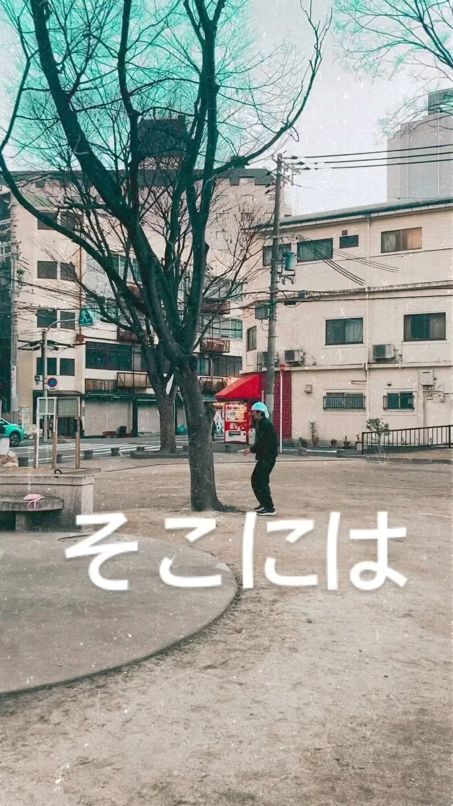

2022年1月6日
フォロー外さんといてください！！

フォロー外さんといてください！！ #中華バル#中華#中華料理#福島区グルメ#路地裏#B級グルメ#中国#チャイニーズ#路地裏チャイニーズ有馬#有馬#シュウマイ#餃子#点心#フォローミー#followme#パクチー#麻婆豆腐#営業再開#餃子
2022年1月6日

フォロー外さんといてください！！ #中華バル#中華#中華料理#福島区グルメ#路地裏#B級グルメ#中国#チャイニーズ#路地裏チャイニーズ有馬#有馬#シュウマイ#餃子#点心#フォローミー#followme#パクチー#麻婆豆腐#営業再開#餃子